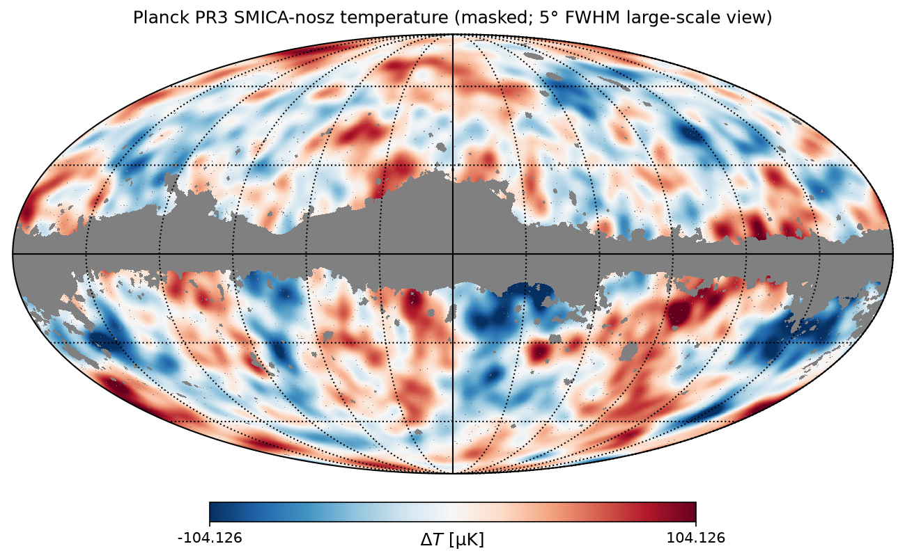
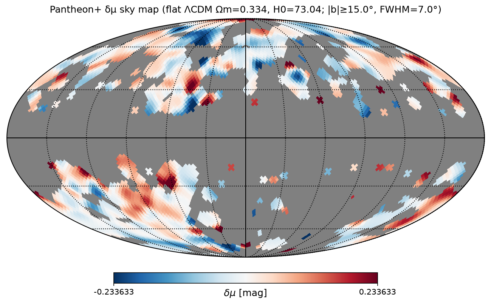

Reference map products
CMB & redshift residual maps
Public Planck SMICA and Pantheon+ products reprojected for sky overlay. Tables below list mild-smoothed extrema for orientation. Correlation analysis remains offline; nothing on this page claims an EGC proof.
Extrema and Mollweide images are reference products derived from official public catalogs. They support visual and offline statistical overlay work. Favourable or discordant patterns would be interpreted only after a documented null test — not asserted here as completed correlation results.
Planck PR3 SMICA temperature
Source:
IRSA Planck PR3 CMB component maps
— product COM_CMB_IQU-smica-nosz_2048_R3.00_full (I_STOKES),
with the common intensity mask
COM_Mask_CMB-common-Mask-Int_2048_R3.00.
Analysis: ud_grade to NSIDE 512, FWHM 1° Gaussian smoothing for extrema,
10° exclusion between listed spots. Units: µK.


Top 10 hot spots (1° smoothed, masked)
| # | ΔT [µK] | l [°] | b [°] | RA [°] | Dec [°] |
|---|---|---|---|---|---|
| 1 | 277.54 | 158.02 | -70.26 | 24.25 | -10.56 |
| 2 | 267.72 | 138.66 | 78.74 | 189.01 | 37.91 |
| 3 | 261.62 | 267.01 | -20.03 | 107.23 | -56.44 |
| 4 | 243.45 | 232.82 | 8.84 | 120.19 | -13.25 |
| 5 | 239.84 | 176.84 | 12.71 | 98.06 | 37.72 |
| 6 | 238.00 | 16.85 | 72.11 | 211.29 | 20.99 |
| 7 | 237.27 | 303.57 | -29.23 | 357.92 | -87.83 |
| 8 | 236.63 | 0.18 | -37.83 | 310.71 | -41.30 |
| 9 | 235.51 | 180.37 | 55.97 | 154.70 | 40.24 |
| 10 | 233.10 | 219.81 | 26.28 | 129.32 | 6.10 |
Top 10 cold spots (1° smoothed, masked)
| # | ΔT [µK] | l [°] | b [°] | RA [°] | Dec [°] |
|---|---|---|---|---|---|
| 1 | -267.13 | 200.83 | 20.11 | 116.11 | 19.39 |
| 2 | -261.10 | 158.29 | -32.09 | 44.75 | 21.88 |
| 3 | -260.18 | 325.20 | -9.82 | 247.59 | -62.79 |
| 4 | -257.28 | 71.19 | -13.79 | 315.38 | 25.25 |
| 5 | -252.51 | 145.55 | -22.75 | 38.70 | 35.54 |
| 6 | -251.80 | 202.31 | -56.54 | 47.35 | -16.86 |
| 7 | -251.33 | 210.76 | -35.23 | 69.99 | -13.62 |
| 8 | -245.95 | 341.72 | -41.51 | 317.47 | -55.25 |
| 9 | -243.83 | 313.86 | -20.74 | 252.58 | -78.16 |
| 10 | -243.02 | 192.04 | -14.79 | 79.81 | 10.98 |
Pantheon+ directional distance-modulus residuals
Source:
PantheonPlusSH0ES/DataRelease
— file Pantheon+_Data/4_DISTANCES_AND_COVAR/Pantheon+SH0ES.dat
(Scolnic et al. 2022; cosmology context Brout et al. 2022).
δμ = MU_SH0ES − μflat ΛCDM(zHD; Ωm=0.334, H0=73.04 km s−1 Mpc−1), with μ = 5 log10(dL/Mpc)+25. Ωm from the Pantheon+ flat-ΛCDM constraint (Brout et al. 2022); H0 matches the SH0ES 2022 Cepheid scale used for MU_SH0ES (Riess et al. 2022). Unique-CID inverse-variance averages; zHD≥0.01; Galactic |b|≥15°; HEALPix NSIDE=32 inverse-variance means; Gaussian FWHM=7° smoothing; extrema with 15° exclusion. Diagonal MU errors weight the map only — full covariance is required for cosmological inference.

Top 10 highest δμ (7° smoothed)
| # | δμ [mag] | l [°] | b [°] | RA [°] | Dec [°] |
|---|---|---|---|---|---|
| 1 | +0.3877 | 315.00 | 88.54 | 193.20 | 25.70 |
| 2 | +0.3731 | 299.53 | 22.02 | 188.70 | -40.74 |
| 3 | +0.3301 | 61.87 | -28.63 | 321.78 | 9.18 |
| 4 | +0.3216 | 356.25 | -72.39 | 355.28 | -36.55 |
| 5 | +0.3068 | 316.61 | 48.14 | 202.21 | -13.74 |
| 6 | +0.2903 | 30.94 | 20.74 | 263.41 | 7.62 |
| 7 | +0.2780 | 30.79 | -61.94 | 341.70 | -24.71 |
| 8 | +0.2696 | 126.56 | -20.74 | 17.43 | 42.00 |
| 9 | +0.2612 | 250.31 | 28.63 | 146.68 | -14.82 |
| 10 | +0.2573 | 45.00 | 31.39 | 258.26 | 23.35 |
Top 10 lowest δμ (7° smoothed)
| # | δμ [mag] | l [°] | b [°] | RA [°] | Dec [°] |
|---|---|---|---|---|---|
| 1 | -0.3604 | 45.00 | 49.70 | 238.56 | 27.91 |
| 2 | -0.2859 | 346.50 | 44.99 | 222.32 | -7.68 |
| 3 | -0.2792 | 57.50 | 63.45 | 222.61 | 34.98 |
| 4 | -0.2687 | 40.78 | 19.47 | 268.57 | 15.46 |
| 5 | -0.2477 | 277.94 | -64.95 | 28.68 | -49.00 |
| 6 | -0.2468 | 36.82 | -73.87 | 355.06 | -24.91 |
| 7 | -0.2329 | 121.50 | 75.34 | 193.35 | 41.78 |
| 8 | -0.2165 | 313.59 | 38.68 | 201.92 | -23.44 |
| 9 | -0.2144 | 264.38 | 15.71 | 147.10 | -33.12 |
| 10 | -0.2088 | 241.07 | 69.42 | 174.03 | 16.22 |
Offline products & caveats
Machine-readable maps and extrema JSON live in the offline EGC workspace
(egc-offline/cmb-redshift/): NPZ/FITS residual maps,
redshift_residuals_extrema.json, cmb_smica_extrema.json,
and the PNGs mirrored under images/ on this site.
These products are intended for CMB↔redshift overlay studies described in the draft outline. No finished cross-correlation statistic or EGC confirmation is claimed on this page. Contact: tom@young01.xyz.